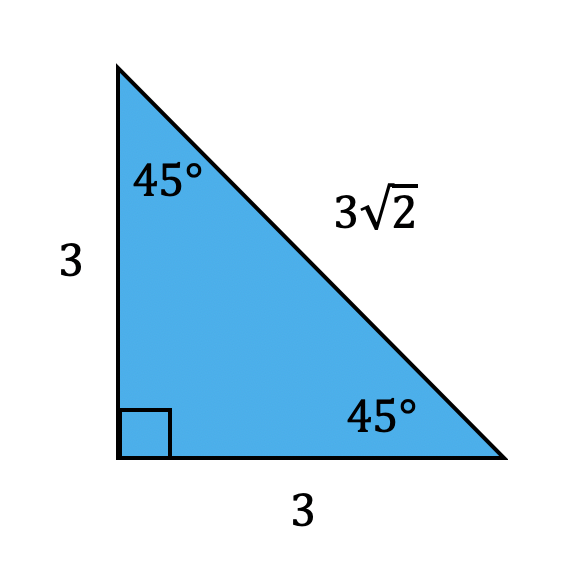

Geometry, Algebra 2, and Pre-Calculus all make use of a very common triangle called a 45°-45°-90° Right Triangle. These triangles are formed when a square is halved using one of its diagonals. Two 45°-45°-90° triangles are formed when a square is halved. Both triangles are congruent to each other, so we will only consider one of them here.
This is an example of a 45°-45°-90° right triangle. As you can see the values of variable x represent the side lengths of the right triangle. The hypotenuse length is equal to the leg length muliplied by the square root of two. This pattern is true for ALL 45°-45°-90° Right Triangles.
A noteworthy addition: A 45°-45°-90° Right Triangle is always an Isosceles Right Triangle.
Let's look at some examples that contain actual meaurements of some 45°-45°-90° Right Triangles.
|  |
Notice the pattern in the numbers. It will always exist and the pattern continues for every triangle. Because of this, it makes it really easy to solve for a 45°-45°-90° Right Triangle because of the pattern. All we need is one side length and we can solve for the other two.
Let's try a few examples and then you can check your answer.
Solve for x.
Since the side lengths are 8 units long, and the hypotenuse is equal to the leg length multiplied by the square root of two, our answer is x = 8√2.
The solution is:
Solve for x.